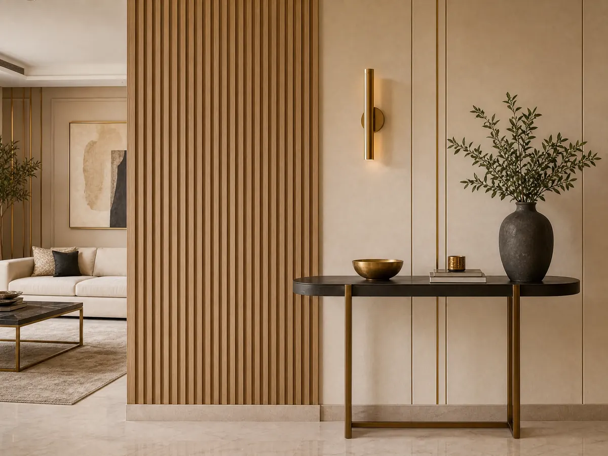

تركيب بديل الشيبورد الرياض
تركيب بديل الشيبورد الرياض
يعد تركيب بديل الشيبورد الرياض خيارا مثاليا لمن يبحث عن ديكور عصري متين وسهل الصيانة يوفر مظهرا أنيقا ويقاوم الرطوبة ويعزز جمال المساحات الداخلية
تُعد أعمال الديكور الحديثة من أهم العناصر التي تضيف لمسة جمالية وعصرية للمنازل والمكاتب، ومع تطور المواد المستخدمة ظهرت حلول بديلة أكثر عملية وأناقة، ومن أبرزها تركيب بديل الشيبورد الذي أصبح خيارًا شائعًا في الرياض، يتميز هذا النوع بمرونته وسهولة تركيبه، مما يجعله مناسبًا لمختلف الاستخدامات الداخلية والخارجية.
ومع زيادة الطلب على خدمات تركيب بديل الشيبورد الرياض، برزت الحاجة إلى الاعتماد على خبراء متخصصين يقدمون نتائج احترافية تضمن الجودة والمتانة، لذلك أصبح من الضروري التعرف على مميزاته، الفرق بينه وبين الشيبورد التقليدي، وأهم استخداماته في عالم الديكور الحديث.
تركيب بديل الشيبورد الرياض
يُعتبر تركيب بديل الشيبورد الرياض من أبرز الخدمات التي يبحث عنها العملاء الراغبون في تجديد منازلهم أو مكاتبهم بأسلوب عصري ومميز، فهو يمنح الجدران والأسقف مظهرًا أنيقًا مع الحفاظ على المتانة وسهولة الصيانة، مما يجعله خيارًا مثاليًا لمختلف المساحات:
أهم مميزات تركيب بديل الشيبورد الرياض:
مقاوم للرطوبة والتغيرات المناخية.
سهل التركيب والفك دون تعقيد.
متوفر بتصاميم وألوان متعددة.
مناسب للجدران والأسقف.
عمر افتراضي طويل.
كما أن اختيار فني محترف يضمن تنفيذ تركيب بديل الشيبورد الرياض بدقة عالية، مع مراعاة أدق التفاصيل للحصول على أفضل نتيجة ممكنة.
معلم تركيب شيبورد
يُعد وجود معلم تركيب الشيبورد وبدائله في شركة ديكورات الأحلام أمرًا ضروريًا للحصول على نتائج مثالية، حيث تعتمد جودة العمل بشكل كبير على خبرة الفني ودقته في التنفيذ.
فالمعلم المحترف يمتلك المهارة في اختيار المواد المناسبة وتنفيذ التصميم بشكل متقن، ومن مهام معلم تركيب شيبورد:
قياس المساحات بدقة.
اختيار أفضل الخامات المناسبة.
تنفيذ التصميم وفق رغبة العميل.
ضمان تثبيت الألواح بشكل متين.
تقديم نصائح للحفاظ على الديكور.
عند الاستعانة بخبير في تركيب بديل الشيبورد الرياض، يمكنك التأكد من الحصول على تصميم احترافي يدوم لسنوات طويلة دون مشاكل.
الفرق بين الشيبورد وبديل الشيبورد
يبحث الكثير من العملاء عن الفرق بين الشيبورد وبديل الشيبورد قبل اتخاذ قرار التنفيذ، حيث توضح شركة ديكورات الأحلام أنه تختلف الخصائص بينهما من حيث المتانة، الشكل، وسهولة الاستخدام.
لذلك فإن فهم هذه الفروقات يساعد في اختيار الخيار الأنسب لكل مساحة، حيث تتمثل الفروقات بين الشيبورد وبديله:
الشيبورد التقليدي أقل مقاومة للرطوبة.
بديل الشيبورد أكثر متانة وعمرًا.
البديل أسهل في التركيب والصيانة.
الشيبورد يحتاج عناية أكبر.
البديل يوفر خيارات تصميم أوسع.
لذلك يُفضل الكثيرون اليوم تركيب بديل الشيبورد الرياض لما يوفره من مزايا عملية وجمالية في آنٍ واحد.
فواصل بديل الشيبورد
تُستخدم فواصل بديل الشيبورد كحل ذكي لتقسيم المساحات بطريقة عصرية دون الحاجة إلى بناء جدران تقليدية، وهي تضيف لمسة جمالية مميزة مع الحفاظ على الانسيابية في التصميم الداخلي، ومن مميزات فواصل بديل الشيبورد أنها:
خفيفة الوزن وسهلة النقل.
توفر الخصوصية دون عزل كامل.
تصاميم متنوعة تناسب جميع الأذواق.
مناسبة للمنازل والمكاتب.
يمكن تعديلها أو إزالتها بسهولة.
تُعد هذه الفواصل جزءًا مهمًا من خدمات تركيب بديل الشيبورد الرياض التي تضيف قيمة جمالية وعملية للمكان،
للحصول على أفضل خدمات تركيب بديل الشيبورد الرياض من شركة ديكورات الأحلام وتنفيذ كافة أعمال الديكور باحترافية عالية، يمكنكم التواصل عبر الرقم التالي: 0531169312.
مميزات استخدام بديل الشيبورد في التصميم الداخلي
تقدم شركة ديكورات الأحلام حلولًا متطورة في عالم التشطيبات الحديثة، ويأتي بديل الشيبورد في مقدمة هذه الخيارات التي أحدثت تحولًا كبيرًا في تصميم الديكور الداخلي.
فهو يجمع بين الأناقة والوظيفة العملية، مما يجعله اختيارًا مثاليًا للمنازل والمكاتب العصرية، يعتمد عليه العديد من المصممين لإضفاء طابع حديث يناسب مختلف الأذواق والمساحات، مع توفير مرونة كبيرة في التنفيذ.
ومن أهم المميزات:
يمنح الجدران مظهرًا راقيًا وفخمًا.
يسهل دمجه مع عناصر الديكور المختلفة.
متوفر بخامات متينة وعالية الجودة.
يتحمل الاستخدام اليومي بكفاءة.
مناسب لكافة المساحات السكنية والتجارية.
خطوات تنفيذ بديل الشيبورد باحترافية
تحرص شركة ديكورات الأحلام على تنفيذ بديل الشيبورد وفق معايير دقيقة تضمن الحصول على نتائج مثالية تدوم طويلًا دون أي مشكلات مستقبلية.
وتعتمد الشركة على خبرة فنيين متخصصين يتبعون خطوات مدروسة في التركيب، مما يضمن تحقيق أعلى مستويات الجودة والدقة في كل مرحلة من مراحل العمل، بداية من التحضير وحتى التسليم النهائي.
وتتمثل خطوات التنفيذ في:
تنظيف الجدران وتجهيزها بشكل كامل قبل البدء.
قياس المساحات بدقة لضمان تناسق التصميم.
تقطيع الألواح وفق المقاسات المطلوبة.
تثبيت الألواح باستخدام أدوات وتقنيات حديثة.
فحص السطح النهائي والتأكد من استوائه وجودته.
أفضل الأماكن لتركيب بديل الشيبورد
تقدم شركة ديكورات الأحلام حلولًا مبتكرة في استخدام بديل الشيبورد، حيث يمكن توظيفه في العديد من المساحات داخل المنزل أو المكتب بفضل مرونته العالية وتصاميمه المتنوعة.
يتميز هذا الخيار بقدرته على التكيف مع مختلف أنماط الديكور، مما يجعله مثاليًا لإضفاء لمسة عصرية وأنيقة تناسب جميع الأذواق، سواء في المساحات الواسعة أو الصغيرة.
وتتمثل أماكن الاستخدام في:
غرف المعيشة لإبراز الجدران بشكل أنيق.
غرف النوم لخلق أجواء مريحة وعصرية.
المكاتب لمنح بيئة عمل احترافية.
الممرات لإضافة لمسة جمالية مميزة.
خلفيات التلفزيون لإبراز التصميم الداخلي بشكل جذاب.
تصاميم عصرية لبديل الشيبورد
تقدم شركة ديكورات الأحلام مجموعة واسعة من تصاميم بديل الشيبورد التي تلبي مختلف الأذواق وتناسب جميع أنماط الديكور الحديثة.
يتميز هذا النوع من الديكورات بإمكانية تنفيذه بأشكال متعددة، مثل الخطوط البسيطة أو النقوش الهندسية أو حتى التصاميم ثلاثية الأبعاد التي تضيف عمقًا بصريًا وجاذبية مميزة للمساحات، مما يمنح المكان طابعًا أنيقًا وعصريًا، وتتميز أبرز التصاميم في:
تصميم الخطوط الطولية لإضفاء إحساس بالاتساع.
الأشكال الهندسية لإبراز الطابع العصري.
تصميمات ثلاثية الأبعاد لعمق وجاذبية أكبر.
ألوان خشبية طبيعية لمظهر دافئ وأنيق.
دمج الإضاءة المخفية لإضافة لمسة فخامة مميزة.
نصائح قبل اختيار بديل الشيبورد
تؤكد شركة ديكورات الأحلام على أهمية التخطيط الجيد قبل تنفيذ بديل الشيبورد، حيث يساعد اختيار النوع المناسب في تحقيق نتائج مثالية تتماشى مع طبيعة المكان واحتياجات الاستخدام اليومي.
فاختيار الخامات والتصاميم بعناية يضمن الحصول على مظهر جمالي متكامل يدوم طويلًا دون الحاجة إلى صيانة متكررة، لذلك ينبغي اتباع بعض النصائح المهمة المتمثلة في:
اختيار خامات مقاومة للرطوبة لضمان المتانة.
تحديد الألوان بما يتناسب مع حجم وإضاءة المساحة.
الاستعانة بفني محترف لضمان دقة التنفيذ.
التأكد من جودة المواد المستخدمة.
اختيار تصميم يتناغم مع الأثاث والديكور العام.
تكلفة تركيب بديل الشيبورد في الرياض
توضح شركة ديكورات الأحلام أن تكلفة تركيب بديل الشيبورد تختلف بناءً على مجموعة من العوامل المهمة التي تؤثر بشكل مباشر على السعر النهائي للمشروع.
لذلك يُنصح دائمًا بطلب عرض سعر مفصل قبل البدء، لضمان وضوح التكاليف وتجنب أي مفاجآت لاحقًا، مع اختيار الحل المناسب من حيث الجودة والميزانية، ومن العوامل المؤثرة في التكلفة:
مساحة الجدران أو الأسقف المطلوب تنفيذها.
نوع الخامة ومدى جودتها.
درجة تعقيد التصميم والتفاصيل المطلوبة.
خبرة الفني ومستوى احترافيته.
موقع المشروع ومدى سهولة الوصول إليه.
خاتمة
في النهاية، يُعد تركيب بديل الشيبورد الرياض خيارًا مثاليًا لكل من يبحث عن ديكور عصري يجمع بين الجمال والعملية، ومع الاستعانة بفني متخصص، يمكن الحصول على نتائج مميزة تدوم طويلًا وتضفي لمسة فريدة على أي مساحة.
الأسئلة الشائعة
هل بديل الشيبورد عملي؟
يُعتبر بديل الشيبورد من أفضل الخيارات العملية في الوقت الحالي، خاصة في المدن مثل الرياض التي تتطلب مواد مقاومة للحرارة والرطوبة، حيث يتميز بسهولة التنظيف وطول العمر الافتراضي، مما يجعله مناسبًا للاستخدام اليومي، ومن أهم أسباب كونه عمليًا نذكر:
مقاوم للعوامل البيئية.
سهل الصيانة والتنظيف.
لا يتعرض للتلف بسرعة.
مناسب للاستخدام طويل الأمد.
هل يمكن استخدام بديل الشيبورد في الأماكن الخارجية؟
نعم، يمكن استخدام بديل الشيبورد في بعض الأماكن الخارجية بشرط اختيار النوع المناسب المقاوم للعوامل الجوية، مع تنفيذ تركيب احترافي يضمن الثبات.
هل يحتاج إلى صيانة مستمرة؟
لا، لا يتطلب بديل الشيبورد صيانة مستمرة كالشيبورد التقليدي، إذ يكفي تنظيفه بشكل دوري وبسيط للحفاظ على مظهره الأنيق وجودته لفترة طويلة دون مجهود كبير.
فيما يلي إجابات مختصرة عن أكثر الأسئلة شيوعًا حول هذا الموضوع، مع إمكانية التواصل للحصول على تفاصيل تناسب مشروعك.
هل تبحث عن تنفيذ احترافي لمشروعك؟
نحن في ديكورات الأحلام نوفر لك أفضل الخامات وأمهر الفنيين في الرياض.
تواصل معنا عبر واتساب